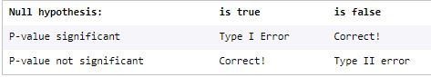
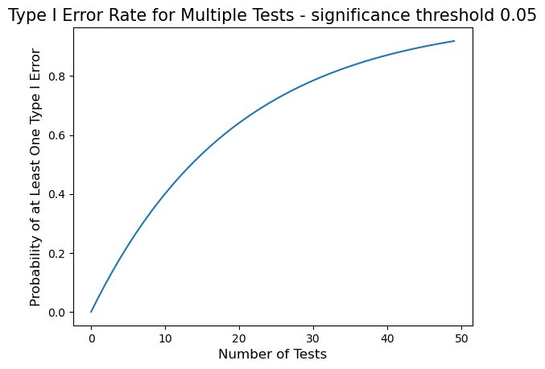
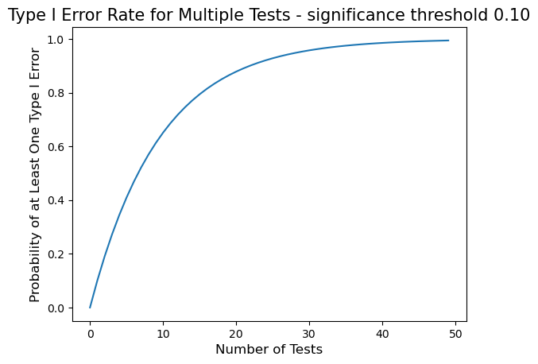
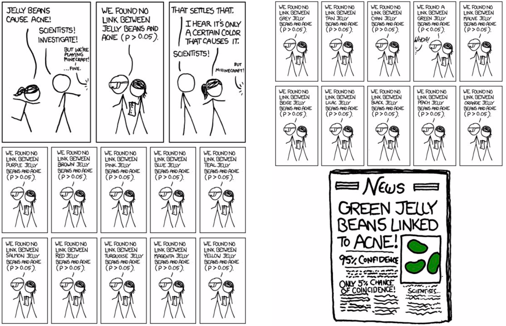

import numpy as np
from scipy.stats import binom_testSometimes, when we run a hypothesis test, we simply report a p-value or a confidence interval and give an interpretation (eg., the p-value was 0.05, which means that there is a 5% chance of observing two or fewer heads in 10 coin flips).
In other situations, we want to use our p-value to make a decision or answer a yes/no question. For example, suppose that we’re developing a new quiz question at Codecademy and want learners to have a 70% chance of getting the question right (higher would mean the question is too easy, lower would mean the question is too hard). We show our quiz question to a sample of 100 learners and 60 of them get it right. Is this significantly different from our target of 70%? If so, we want to remove the question and try to rewrite it.
In order to turn a p-value, which is a probability, into a yes or no answer, data scientists often use a pre-set significance threshold.
The significance threshold can be any number between 0 and 1, but a common choice is 0.05. P-values that are less than this threshold are considered “significant”, while larger p-values are considered “not significant”.
Interpreting a P-Value based on a Significance Threshold
et’s return to the quiz question example from the previous exercise — we want to remove our quiz question from our website if the probability of a correct response is different from 70%. Suppose we collected data from 100 learners and ran a binomial hypothesis test with the following null and alternative hypotheses:
- Null: The probability that a learner gets the question correct is 70%.
- Alternative: The probability that a learner gets the question correct is not 70%.
Assuming that we set a significance threshold of 0.05 for this test:
If the p-value is less than 0.05, the p-value is significant. We will “reject the null hypothesis” and conclude that the probability of a correct answer is significantly different from 70%. This would lead us to re-rewrite the question.
If the p-value is greater than 0.05, the p-value is not significant. We will not be able to reject the null hypothesis, and will conclude that the probability of a correct answer is not significantly different from 70%. This would lead us to leave the question on the site.
Error Types
Whenever we run a hypothesis test using a significance threshold, we expose ourselves to making two different kinds of mistakes:
type I errors(false positives) andtype II errors(false negatives)

Consider the quiz question hypothesis test described in the previous exercises:
- Null: The probability that a learner answers a question correctly is 70%.
- Alternative: The probability that a learner answers a question correctly is not 70%.
Suppose, for a moment, that the true probability of a learner answering the question correctly is 70% (if we showed the question to ALL learners, exactly 70% would answer it correctly). This puts us in the first column of the table above (the null hypothesis “is true”). If we run a test and calculate a significant p-value, we will make type I error (also called a false positive because the p-value is falsely significant), leading us to remove the question when we don’t need to.
On the other hand, if the true probability of getting the question correct is not 70%, the null hypothesis “is false” (the right-most column of our table). If we run a test and calculate a non-significant p-value, we make a type II error, leading us to leave the question on our site when we should have taken it down.
Q.Suppose that the average score on a standardized test is 50 points. A researcher wants to know whether students who take this test in an ergonomically designed chair score significantly differently from the general population of test-takers. The researcher randomly assigns 100 students to take the test in an ergonomic chair. Then, the researcher runs a hypothesis test with a significance threshold of 0.05 and the following null and alternative hypotheses -
Null:The mean score for students who take the test in an ergonomic chair is 50 points.Alternative:The mean score for students who take the test in an ergonomic chair is not 50 points. Suppose that the truth (which the researcher doesn’t know) is: if every student took the test in an ergonomic chair, the average score for all test-takers would be 52 points. Based on their sample of only 100 students, the researcher calculates a p-value of 0.07.
A. This is an example of a Type II error or False Negative. The mean score is not 50, it is 52 and so our NULL hypothesis is False. However, as the p-value of 0.07 is not less than 0.05 and is therefore not significant, we would assume in error that the mean score is 50.
Setting the Type I Error Rate
It turns out that, when we run a hypothesis test with a significance threshold, the significance threshold is equal to the type I error (false positive) rate for the test. To see this, we can use a simulation.
Recall our quiz question example: the null hypothesis is that the probability of getting a quiz question correct is equal to 70%. We’ll make a type I error if the null hypothesis is correct (the true probability of a correct answer is 70%), but we get a significant p-value anyways.
Now, consider the following simulation code:
false_positives = 0
sig_threshold = 0.05
for i in range(1000):
sim_sample = np.random.choice(['correct', 'incorrect'], size=100, p=[0.7, 0.3])
num_correct = np.sum(sim_sample == 'correct')
p_val = binom_test(num_correct, 100, 0.7)
if p_val < sig_threshold:
false_positives += 1
print(false_positives/1000)/tmp/ipykernel_1730/3872515373.py:7: DeprecationWarning: 'binom_test' is deprecated in favour of 'binomtest' from version 1.7.0 and will be removed in Scipy 1.12.0.
p_val = binom_test(num_correct, 100, 0.7)0.064This code does the following:
- Set the significance threshold equal to 0.05 and a counter for false positives equal to zero.
- Repeat these steps 1000 times:
- Simulate 100 learners, where each learner has a 70% chance of answering a quiz question correctly.
- Calculate the number of simulated learners who answered the question correctly. Note that, because each learner has a 70% chance of answering correctly, this number will likely be around 70, but will vary every time by random chance.
- Run a binomial test for the simulated sample where the null hypothesis is that the probability of a correct answer is 70% (0.7). Note that, every time we run this test, the null hypothesis is true because we simulated our data so that the probability of a correct answer is 70%.
- Add 1 to our false positives counter every time we make a type I error (the p-value is significant). -Print the proportion of our 1000 tests (on simulated samples) that resulted in a false positive.
Note that the proportion of false positive tests is very similar to the value of the significance threshold (0.05).
Let’s make one small change to our simulated learners illustration : the code to create sim_sample has been altered so that the simulated learners each have an 80% chance of answering the question correctly.
# Import libraries
import numpy as np
from scipy.stats import binom_test
# Initialize num_errors
false_positives = 0
# Set significance threshold value
sig_threshold = 0.05
# Run binomial tests & record errors
for i in range(1000):
sim_sample = np.random.choice(['correct', 'incorrect'], size=100, p=[0.8, 0.2])
num_correct = np.sum(sim_sample == 'correct')
p_val = binom_test(num_correct, 100, .8)
if p_val < sig_threshold:
false_positives += 1
# Print proportion of type I errors
print(false_positives/1000)/tmp/ipykernel_1730/2200219722.py:14: DeprecationWarning: 'binom_test' is deprecated in favour of 'binomtest' from version 1.7.0 and will be removed in Scipy 1.12.0.
p_val = binom_test(num_correct, 100, .8)0.039The false positives represent 0.039 of the sampled observations, which is close to the significance threshold of 0.05.
Now, let’s change the significance threshold to 0.01 :
# Initialize num_errors
false_positives = 0
# Set significance threshold value
sig_threshold = 0.01
# Run binomial tests & record errors
for i in range(1000):
sim_sample = np.random.choice(['correct', 'incorrect'], size=100, p=[0.8, 0.2])
num_correct = np.sum(sim_sample == 'correct')
p_val = binom_test(num_correct, 100, .8)
if p_val < sig_threshold:
false_positives += 1
# Print proportion of type I errors
print(false_positives/1000)/tmp/ipykernel_1730/1924438070.py:10: DeprecationWarning: 'binom_test' is deprecated in favour of 'binomtest' from version 1.7.0 and will be removed in Scipy 1.12.0.
p_val = binom_test(num_correct, 100, .8)0.006The false positives represent 0.006 of the sampled observations, which is close to our revised significance threshold of 0.01.
Problems with Multiple Hypothesis Tests
While significance thresholds allow a data scientist to control the false positive rate for a single hypothesis test, this starts to break when performing multiple tests as part of a single study.
For example, suppose that we are writing a quiz at codecademy that is going to include 10 questions. For each question, we want to know whether the probability of a learner answering the question correctly is different from 70%. We now have to run 10 hypothesis tests, one for each question.
If the null hypothesis is true for every hypothesis test (the probability of a correct answer is 70% for every question) and we use a .05 significance level for each test, then:
When we run a hypothesis test for a single question, we have a 95% chance of getting the right answer (a p-value > 0.05) — and a 5% chance of making a type I error.
When we run hypothesis tests for two questions, we have only a 90% chance of getting the right answer for both hypothesis tests (0.95 *0.95 = 0.90) — and a 10% chance of making at least one type I error.
When we run hypothesis tests for all 10 questions, we have a 60% chance of getting the right answer for all ten hypothesis tests (0.95 ^ 10 = 0.60) — and a 40% chance of making at least one type I error.
To address this problem, it is important to plan research out ahead of time: decide what questions you want to address and figure out how many hypothesis tests you need to run. When running multiple tests, use a lower significance threshold (eg., 0.01) for each test to reduce the probability of making a type I error.
# prob of Type I error for 10 tests with significance threshold of 0.05
0.95**100.5987369392383787# prob of Type I error for 10 tests with significance threshold of 0.01
0.99**100.9043820750088044Illustration of Type I error rates
# Import libraries
import numpy as np
import matplotlib.pyplot as plt
# Create the plot
sig_threshold = 0.05
num_tests = np.array(range(50))
probabilities = 1-((1-sig_threshold)**num_tests)
plt.plot(num_tests, probabilities)
# Edit title and axis labels
plt.title('Type I Error Rate for Multiple Tests - significance threshold 0.05', fontsize=15)
# Label the y-axis
plt.ylabel('Probability of at Least One Type I Error', fontsize=12)
# Label the x-axis
plt.xlabel('Number of Tests', fontsize=12)
# Show the plot
plt.show()
# Create the plot
sig_threshold = 0.10
num_tests = np.array(range(50))
probabilities = 1-((1-sig_threshold)**num_tests)
plt.plot(num_tests, probabilities)
# Edit title and axis labels
plt.title('Type I Error Rate for Multiple Tests - significance threshold 0.10', fontsize=15)
# Label the y-axis
plt.ylabel('Probability of at Least One Type I Error', fontsize=12)
# Label the x-axis
plt.xlabel('Number of Tests', fontsize=12)
# Show the plot
plt.show()
Significance Thresholds Review
In this lesson you have:
- Learned to interpret a p-value using a significance threshold
- Explored type I and type II errors in hypothesis testing
- Shown that the significance threshold for a hypothesis test is equal to the type I error rate
- Seen how multiple hypothesis tests lead to an increased probability of a type I error
